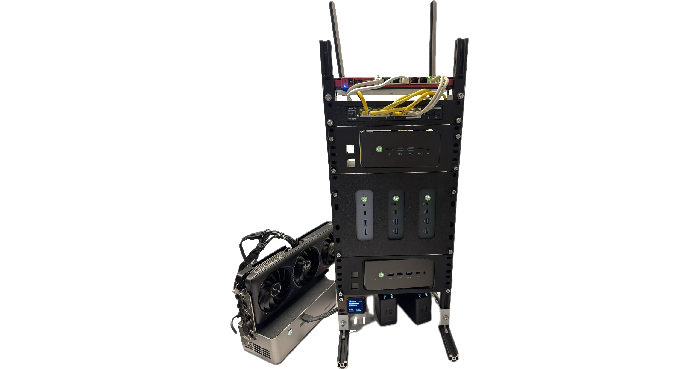

Всё, что видно в зале, считается здесь. Наружу уходит только то, что прошло DLP, стража и квоты.

Смета со ссылками на позиции — HARDWARE.md в репозитории стенда. Цены — розница на 15.11.26.
Остальные варианты — после доклада у стенда: их сто тысяч, и все они не про эту карту.
Полная схема слоёв — architecture-c2.jpg в репозитории стенда.
Страж внешнего маршрута — 12,7 ГБ. 27B — до 15,6. Поэтому локальная модель и внешний маршрут на одной карте не живут вместе: отсюда и порядок кейсов.
Гигабайты VRAM на RTX 5070 Ti (16 311 МиБ); последняя строка — GTT iGPU, карту не занимает
Qwen3.8-27B-UD, трёхбитный квант с 4-битным KV: 128K контекста в 15,93 ГБ. Модель класса «нужен сервер» — на потребительской карте.
Замер 09.11.2026 на RTX 5070 Ti. На сцене — короткий вопрос: на 128K первый токен идёт 148 секунд.
Стенд сам забирает манифесты и образы. Данные уходят наружу только двумя адресами — и только через шлюз. Аудио, бумага, документы, картинки — не покидают стенд.
Наведите камеру — телефон подключится сам. Пароль гостевой: на время показа, после мероприятия меняется.
В сети стенда имена резолвит роутер — ничего настраивать не нужно.
macOS после правки: sudo dscacheutil -flushcache; sudo killall -HUP mDNSResponder
Проверка: curl -sI https://owu.demo-ai-lab.ru → 200
Пять кодов одного маршрута, без единой правки в приложении-клиенте. Это и есть контракт.
Docling на CPU делает layout и таблицы, GLM-OCR на карте распознаёт текст: русский скан — 0,4 секунды на страницу, 11,9 ГБ.
Тот же движок — MCP-инструмент: агент разбирает документы, не зная, как устроен OCR.
bge-m3 и реранк — на iGPU 780M: 2,8 из 11,6 ГБ GTT, карта занята только стражем. Наружу уезжает не база, а три-четыре отобранных абзаца.
Дорогая часть RAG — не генерация, а поиск. Он живёт на стенде.
owu.demo-ai-lab.ru · пул учёток — на слайде «Ссылки»
Призы — от ГНИВЦ, ведёт Марина (DevRel). Бюджет: 30–50 попыток, 10 минут.
Учётки для заданий — после доклада, у стенда. Адреса сервисов — на слайде «Ссылки и вход».
Репозиторий, спецификации, цифры и смета — по QR справа. Учётки для заданий — у стенда. Спасибо за время и вопросы.
Михаил Соколов · ГНИВЦ
@telegram · michael@sokolov.im
github.com/
msklv/demo-ai-lab